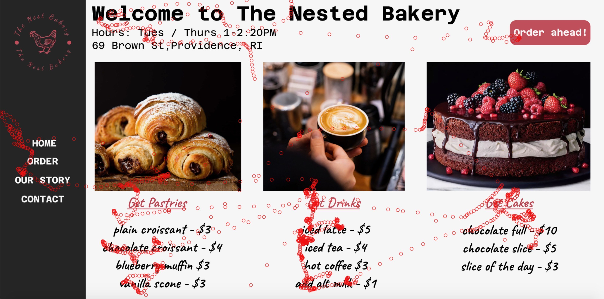
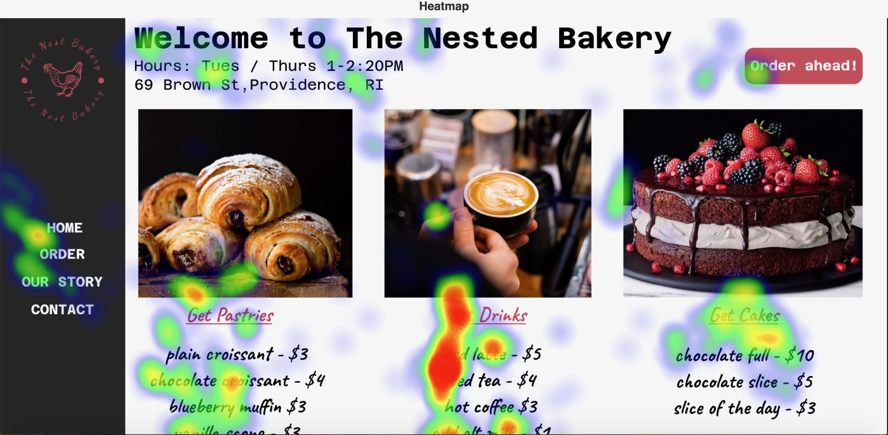

Context
My group and I have made two prototypes made hypothesis in regards to what each user's eyes are going to be attracted to. In this process, my group split into two teams of two. Each one made a completely different figma prototype for a bakery store. Here are the figmas:
Group A:
Group B:
There is no personal conncetion to this project like the others, however, I do think the data and results are interesting! I learned a lot about designing from the based on wanting a specific user experience.
Hypothesis
Each group wrote a hypothesis in regards to what they thought that their user was going to look at/focus on:
- Group A: We hypothize the the user's eyes will be drawn to the images and the large text at the top of the page. From there, the user will take a look at the menu items.
- Group B: We hypothesize that the user's eyes will be drawn towards the “Welcome to the Nested Bakers” text first followed by the savory, sweet, and drink items just below in that order. Particularly, users will focus on the images of the menu items.
Overall, the goal of each figma prototype was to get the user to read the whole page and come to a conclusion on what they wanted to order. We wanted to see if the design of each webpage impacted each users decision and how long it took them to make that decision.
Results
The first image for each user is a diagram of where their eyes went (replay). The second image is a diagram of where their eyes focused (heatmap).
User 1:
 User 2:

.jpg)
Conclusion
The user for interface A focused mainly on both the title text and the text of the menu items, this partially matched our expectations. They did not really look much at the images. They also focused more on the drinks than any other menu item. This data is valuable because it tells us that we should focus more on making the menu item names more appealing rather than the images, since they weren't even looked at. The user for interface B looked at every part of the page, and they spent a lot of time reading the text on the menu, this matched most of our expectations. Having the menu items displayed in cards made the user look at every aspect of the menu items. This seems like the better approach. The user also focused a lot on the text because the font may have been too small for them to read. In conclusion, both approaches were effective in getting the user to pick a menu item in relatively the same amount of time but some parts of our hypotheses did not necessarily hold up.